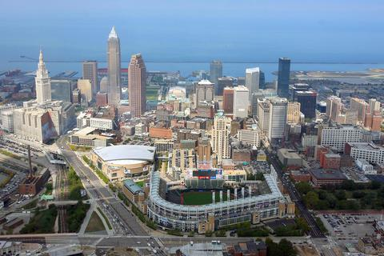

1 / 3

clevland skyline
2 / 3

clevland river
3 / 3

clevland sign
Cleveland is known for being a blue coller town being founded by and made up of many blue coller workers. It has several major sports francheises, Browns and Cavs, and has been called the birthplace of rock and roll. Established in 1796 Cleveland has been is historic city in the rustbelt but has since been changing to keep up with todays devoloping technology.